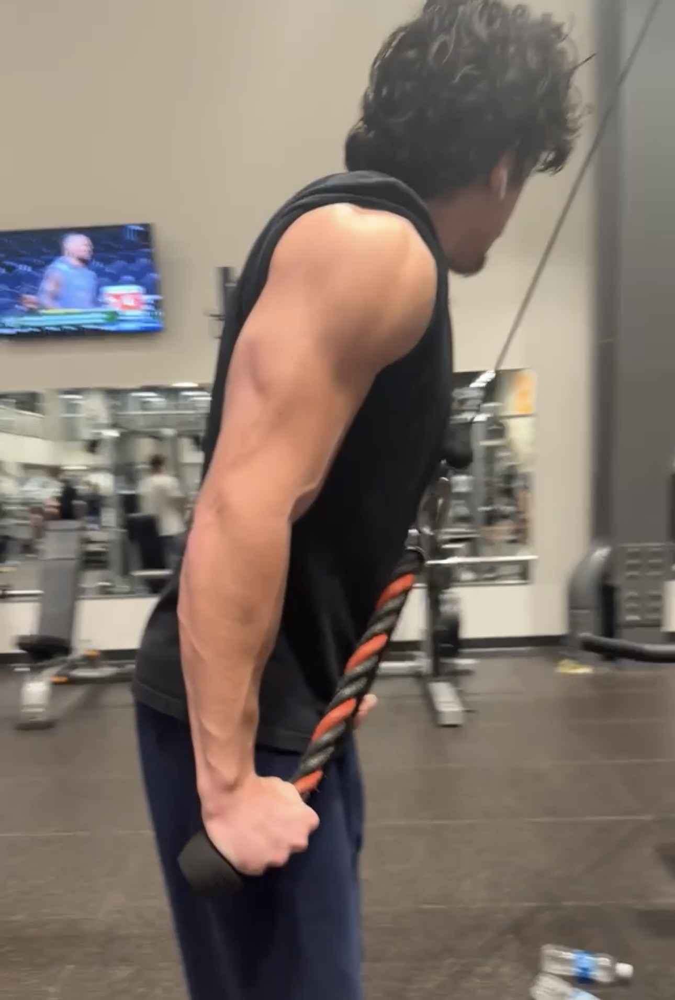

Page 2: The Methodology | Hypertrophy & Training Splits

The Intensity Secret: Learning from the Pros
When I moved away from powerlifting, I started diving into the "Old School" wisdom of bodybuilders like Mike Mentzer. One thing people get wrong about hypertrophy is thinking "lower weight" means "easy." Mentzer preached the idea of High-Intensity Training (HIT).
"If you're training hard, you don't need to train long." - Mike Mentzer
I've learned that the goal isn't just to do more reps; it's to take those reps to absolute muscular failure. I focus on controlled eccentrics (the lowering phase) and staying in that 8-12 rep "sweet spot." It's about that mind-muscle connection and making 225 lbs feel like 315 lbs because of the tension you're creating.
Evolution of the Split
I've found it's vital to change your split every 7 to 8 months. If you stay on the same routine forever, your Central Nervous System (CNS) and muscles hit "adaptive resistance," and your progress stalls.
- The Past (PPL): I used to live by the Push/Pull/Legs split. It's great for frequency, but I felt like my arms and shoulders were getting the short end of the stick.
- The Present (Arnold Split): I've moved to the Arnold Split (Chest/Back, Shoulders/Arms, Legs). This allows me to pair antagonistic muscle groups for a massive pump while giving my shoulders and arms their own dedicated day to grow. It's been a game changer for my overall symmetry.
Internal Health: The Bloodwork
One thing I've learned is that you can't out-train bad hormones. I started getting my blood levels drawn to make sure everything was optimized for growth. I track Total Testosterone, Free Testosterone, and SHBG. Personally, I've managed to keep my levels at a solid 750 ng/dL total test, which is great for a natural athlete.
If you're feeling sluggish or not seeing gains despite a perfect diet, I always recommend getting a full panel done. Improving your levels naturally comes down to sleep, managing cortisol, and making sure you aren't deficient in Vitamin D or Zinc.